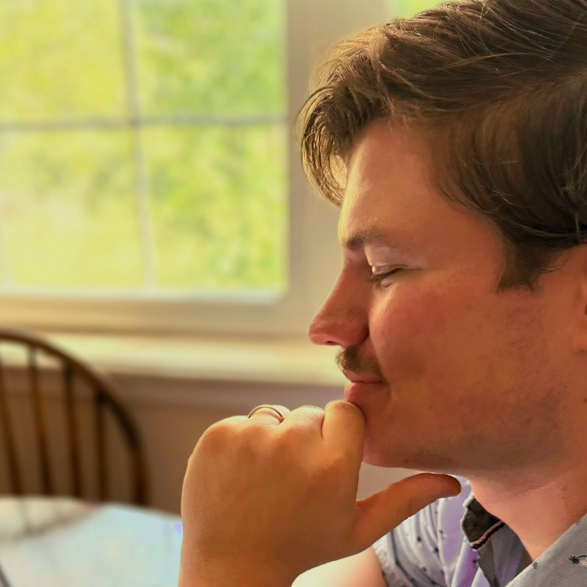
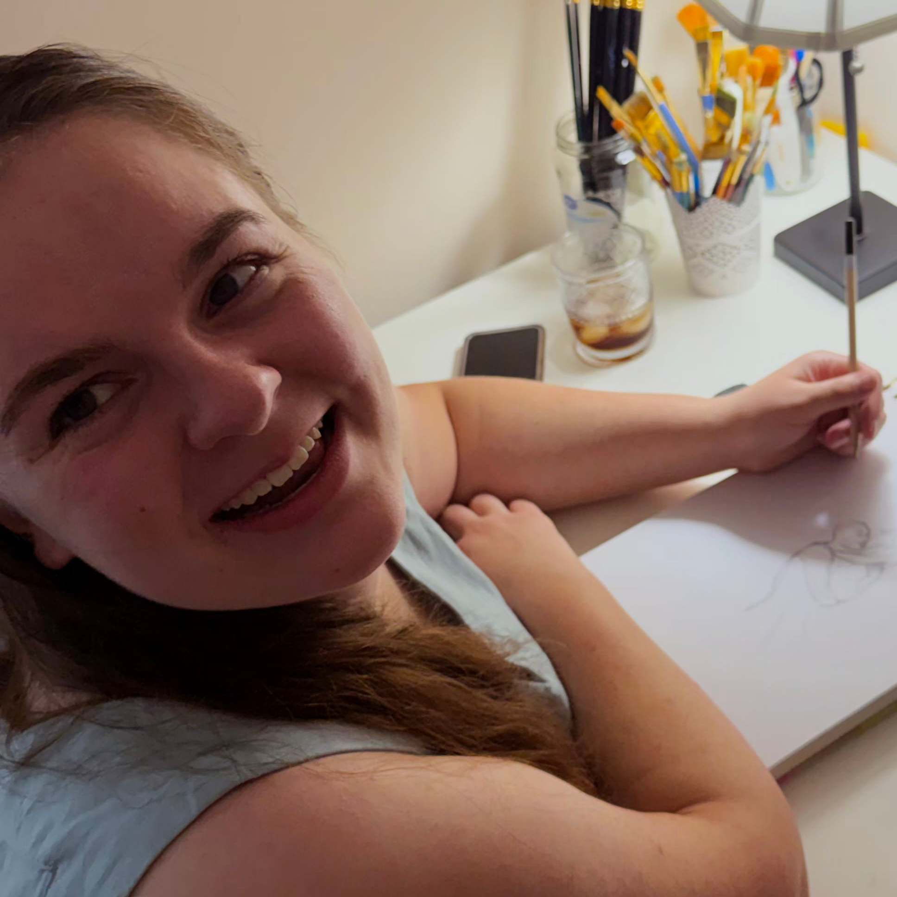

Meet Stone, the author of Flint & Steel and the writer here at AirosoStories. Stone has always loved the kinds of stories that make you want to grab your boots, trudge through a forest, and find the magic in everything. Now he gets to write those stories himself, and Flint & Steel is just the beginning.

Meet Annalee, the illustrator for Airoso Stories. Stone may be the one who writes the characters, but Annalee is the one who gets to decide what they actually look like. She has a knack for turning words into pictures and taking the worlds we imagine and making them feel like somewhere you could actually step into. Basically, she’s the reason the stories in our heads don’t have to stay there.